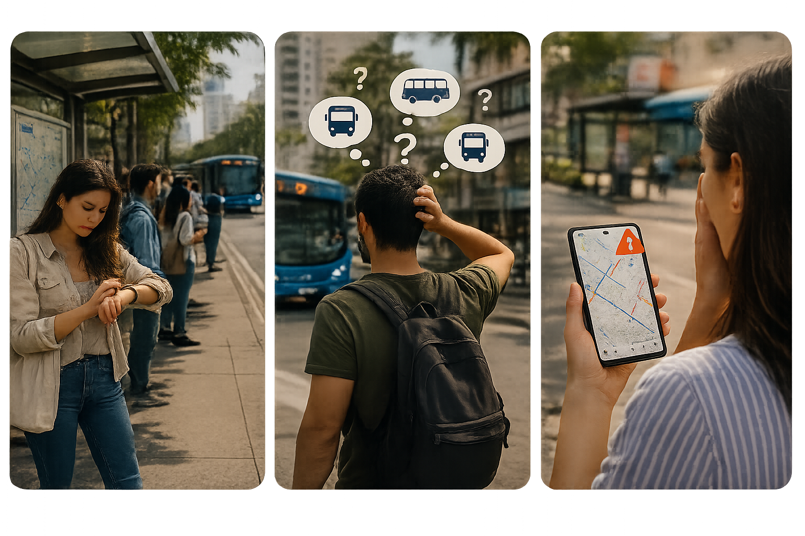

Muévete sin sorpresas. Llega con confianza.
Movilidad pensada para estudiantes universitarios de Barranquilla. Movu reúne en un solo lugar la información que necesitas para planificar tus desplazamientos en transporte público. Consulta rutas, recibe alertas de movilidad y encuentra alternativas para llegar a tu destino con mayor tranquilidad.
¿Cuántas veces has esperado un bus sin saber si realmente va a pasar?
Para muchos estudiantes, llegar a la universidad empieza mucho antes de entrar al salón. El transporte público forma parte de su rutina diaria, pero no siempre cuentan con la información clara sobre cambios de rutas, cierres de vías o retrasos. Esa incertidumbre provoca pérdida de tiempo, estrés y desplazamientos poco eficientes.

Navega con confianza.
Una herramienta diseñada para resolver tu problema de transporte público.
Planificación inteligente
Encuentra las mejores rutas alternativas en cuestión de segundos cuando tu camino habitual esté cortado.

Rutas confiables
Información actualizada sobre autobuses para cualquier destino. Hacemos un seguimiento de las rutas que más te interesan, desde Transmetro hasta las líneas circulares tradicionales.

Recibe alertas
Mantente al tanto de los cortes de carretera, paradas, tiempos aproximados y los desvíos que afecten a tu trayecto diario al trabajo. Conoce cierres, desvíos y cambios.

Asistente inteligente
Pregunta a Movu cómo llegar o qué alternativa tomar.
¿Por qué usar Movu?
Movu está diseñado para hacer que cada desplazamiento sea más simple y confiable. Reunimos la información que necesitas para planificar tu viaje, mantenerte informado y tomar mejores decisiones mientras te mueves por la ciudad.
Muévete con confianza
Accede a la información que necesitas para planificar tus recorridos y tomar decisiones con mayor tranquilidad.
Menos incertidumbre
Conoce las novedades de movilidad y encuentra alternativas cuando una ruta cambie o se presenten imprevistos en la ciudad.
Creado desde la experiencia
Movu nació para resolver problemas cotidianos del transporte público y ayudar a que cada recorrido sea más sencillo, organizado y predecible.


MOVU empieza por estudiantes universitarios de Barranquilla.
Movu nació de una idea sencilla: utilizar el transporte público de nuestra ciudad no debería ser un juego de adivinanzas. Estamos construyendo una plataforma de movilidad centrada en las personas, priorizando tu tiempo y tu tranquilidad.
Combinando el conocimiento local del transporte ayudamos a estudiantes a desplazarse con confianza. Más que mostrar rutas, queremos brindar información confiable en cada rincón de la ciudad.
Hablemos de Movu
Movu está siendo construido para las personas que usan el transporte público todos los días. Tu experiencia puede ayudarnos a entender mejor sus necesidades y crear una plataforma que realmente haga la diferencia.
¿Tienes una idea, sugerencia o experiencia que quieras compartir?
Descubre la ventaja de usar Movu
Estamos construyendo una nueva forma de vivir el transporte público en Barranquilla. Conoce más sobre las ventajas de usar Movu y comienza a usarla ahora mismo.Muevete con tranquilidad.